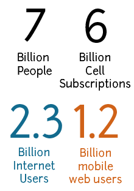
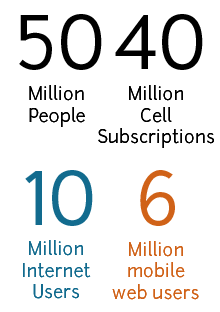
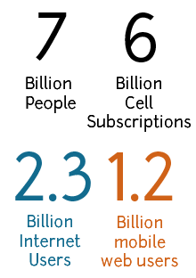
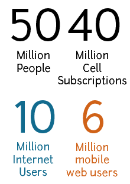
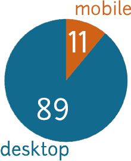
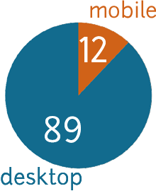
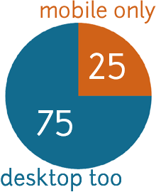
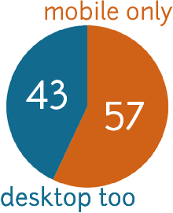
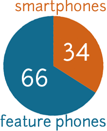
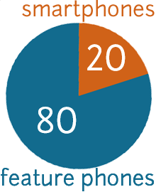

Cell and web stats: World and South Africa
| People | Cell Users | Internet Users | Mobile Web Users | |
|---|---|---|---|---|
| World (billions) | 7 | 6 | 2.3 | 1.2 |
| South Africa (millions) | 50 | 40 | 10 | 6 |
World
South Africa
Mobile is showing continued and rapid growth across a wide range of metrics: sales, internet usage (especially search), advertising, e-commerce, and social networking. Many users don’t have access to a fixed-line or a desktop computer, so their mobile device is their only access to the internet. Below are some statistics as a guide to this. More detailed information is available from the sites in the sources section.
| People | Cell Users | Internet Users | Mobile Web Users | |
|---|---|---|---|---|
| World (billions) | 7 | 6 | 2.3 | 1.2 |
| South Africa (millions) | 50 | 40 | 10 | 6 |
World
South Africa
| Mobile | Desktop | |
|---|---|---|
| World (%) | 11 | 89 |
| South Africa (%) | 12 | 88 |
World
South Africa
| Mobile only | Desktop too | |
|---|---|---|
| World (%) | 25 | 75 |
| South Africa (%) | 57 | 43 |
World
South Africa
| Feature phones | Smartphones | |
|---|---|---|
| World (%) | 66 | 34 |
| South Africa (%) | 80 | 20 |
World
South Africa
Given that mobile web access is increasingly popular, we should be building site that work well on mobile devices. The big question is: how do we do rigorous testing on mobile?
Doing so is good for developers because it helps our sites reach as many people, on as many devices, as possible. The focus that mobile brings also helps us produce lighter, leaner, sites. [Why is testing on mobile good for developers?
Testing on mobile is also good for our clients. If their customers aren’t already using their site on mobile, they will be soon. Mobile offers a new channel, and new opportunities for businesses to connect with their existing customers and to pull in new ones.
A “Comprehensive” Guide to Mobile Statistics by Jason Grigsby of Cloud Four provides a great starting point for research and statistics sources.
The Writings section of Luke Wroblewski’s site provides excellent, regular, details of mobile-related news, amongst other things.
A brief list of sources used for the statistics above: